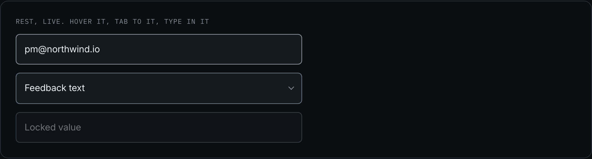
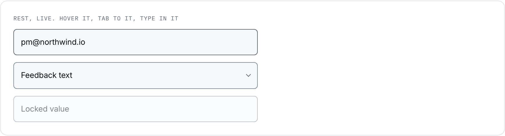
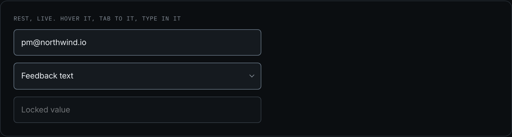
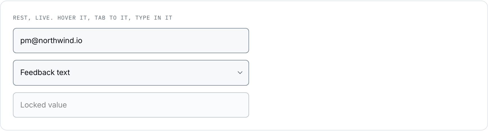

Input
One component and three elements: a text field, a textarea and a select share one zone set, so they are one thing with three forms rather than three things. The select adds a chevron, which is an affordance and not a zone.
design/system/components/input.css · 8 screens, 18 fields. Text 8, email 4, password 4, textarea 6, select 1, title-inline 2.
Anatomy
| Zone | Class or element | Rule |
|---|---|---|
| the field | .input | 44px floor, the surface ground, and a border from --line-control. At 1.19:1 off the page the border is the ONLY thing that says this is a field |
| the chevron | .select::after | On a WRAPPER, because a select cannot carry a pseudo-element. Drawn from the placeholder ink, so it costs no colour literal and no request |
| the placeholder | ::placeholder | Secondary ink, from base.css. It shows the shape of the answer, never repeats the label |
| the label | .field-label | A separate atom. A field without one is a field a screen reader cannot name |
Variants
| Axis | Values | The rule that chooses |
|---|---|---|
| element | text 18 · textarea 6 · select 1 | The shape of the answer chooses. One line, several lines, or one of a closed set |
| content | default · mono 1 · title-inline 2 | A value read character by character takes the mono face. A URL is read character by character; a sentence is not |
| density | base 16 · dense 5 | Density is given by the place. A mapping grid puts five fields in a column. The 44px floor does not come down with the type |
| width | not an axis | A field is 100% of its container by definition. Where the container is narrow, the field is narrow |
When to use it
This product asks a person to type in exactly one place: bringing feedback in, and naming the artifact that comes out. Nothing else in it is a form. That is why the field is not a decorated control here but a plain one: the interesting thing on a CSV mapping screen is the customer's own sample data beside the field, and a field competing with it would be the defect.
The title-inline form is the sharpest case. A brief is named where it will be read, at heading size, with a dashed rule underneath as the only sign that the heading can be edited. The alternative, a labelled field above a preview, would ask the person to imagine the result instead of showing it.
Rule and anti-rule
A label above, a field at the floor, a border that identifies it. The placeholder, where there is one, shows the shape of the answer.
A placeholder standing in for the label. It disappears the moment somebody types, so the person loses the name of the thing they are filling in, and a screen reader never had it.
| If you are about to | Take instead | Why |
|---|---|---|
| use a field to show a value nobody edits | a mono line of text, or .tag | A field promises editability. The share link is a real readonly field because it is copied; a source status is not |
| put help text in the placeholder | the label, or a line under the field | A placeholder is not help, it is an example. It vanishes on the first keystroke |
| shrink the field below 44px for density | .input--dense | It brings the type and the padding down and leaves the target where it is |
States
| State | Token | What moves |
|---|---|---|
| hover | --line-hover | The border brightens. Nothing else: a field that grows on hover moves the whole form |
| focus-visible | --line-focus, from base.css | The one ring the product uses. The title-inline form offsets it by 4px, because its own border is a dashed rule and the two would touch |
| error | --text-danger on .field-err | The error is a LINE UNDER THE FIELD and not a red border: the message says what to do, and a colour alone cannot |
| disabled | --opacity-disabled | Dimmed, never repainted |






Six snapshots and six named differences. Active is absent on purpose: a field has no pressed state, and a cell filled for the sake of the template would be an invented one.
Re-take: node scripts/shoot-states.js input
The file and the tokens
| Reads | Grows from | For |
|---|---|---|
--bg-surface | --grey-900, plate B pixel | the ground of the field |
--line-control | --grey-600 | its boundary. Raised at the Step 4 review to clear 3:1 |
--line-hover | --grey-400 | hover |
--text-primary, --text-secondary | --grey-050, --grey-400 | the value, and the placeholder |
<label class="field-label">Work email</label> <input class="input" type="email"> <span class="select"><select class="input"><option>Feedback text</option></select></span> <textarea class="input" rows="3"></textarea>
Stands on: 3.2 Import a CSV, 6.1 Build brief, 6.3 Share link